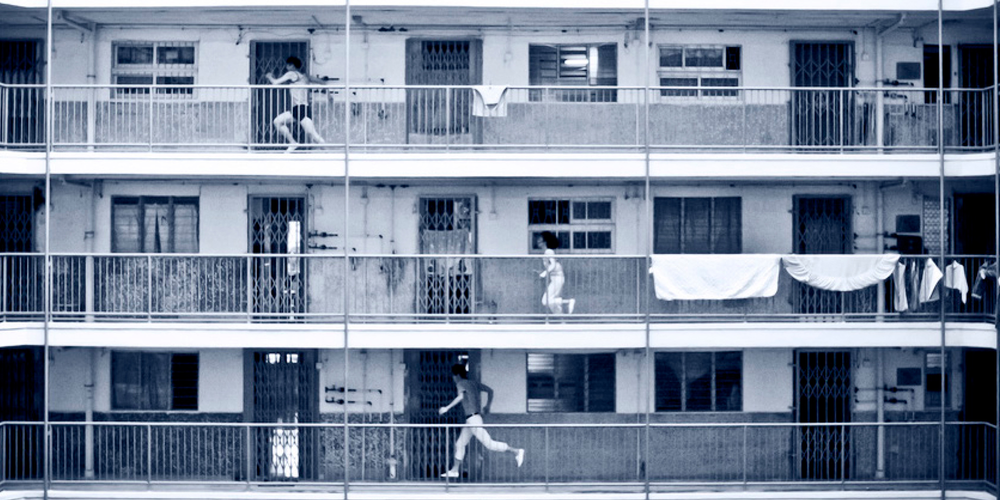
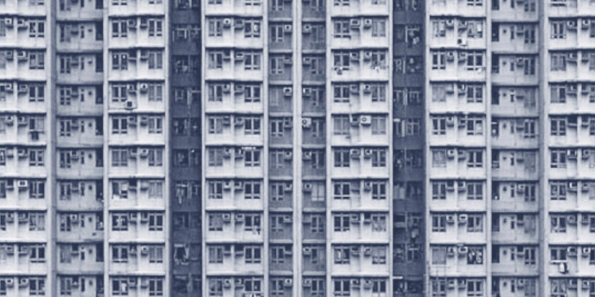
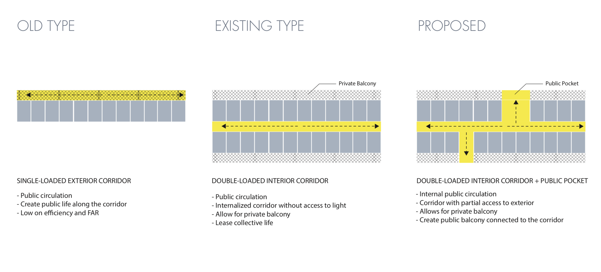
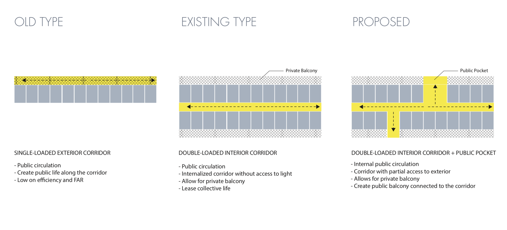
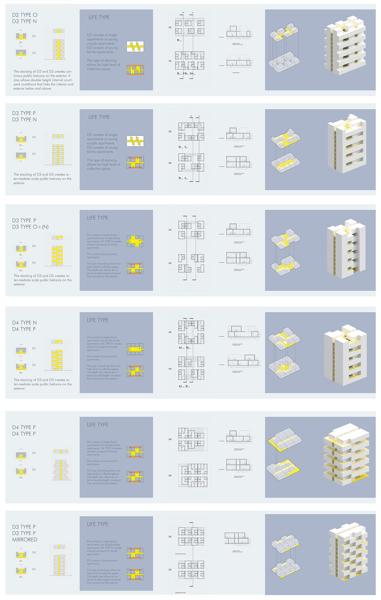
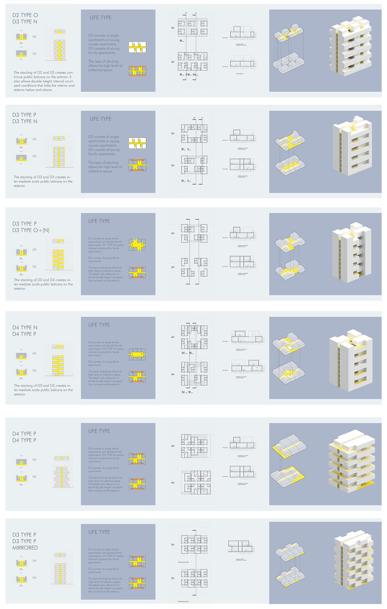

00 Context
Design for a Outpatient Healthcare Environment
By regulating the program sets needed for different sizes of apartments,
I am able to have flexible unit configurations and re-categorize the
unit types based on the depth of the units. There are three unit/corridor
typologies. The “N” type means niche, which creates internal courtyard
condition. The “O” type means open pocket, which replaces the unit and
links the interior and exterior. The “P” type means public balcony,
which creates shared collective space. The table shows the samples of
stacking various types of “O”, “N”, and “P”. From the table, I chose
six types of stacking that have different collective and private space
configuration. The six basic samples of ½ wing length, 10 floors are
used as the aggregation unit. In this table, I set up the criteria by
measuring the (1) public balcony (2) internal courtyard and (3) scale
of the community they creates. From left to right, the gradient shows
the most collective type to the most private type. The bottom row shows
the scale of the community created by the shared public balcony.
In this way, the set of aggregations also reflect their scale of community
on the elevation expression.



01 Analysis
Outlining the Design Principles
By regulating the program sets needed for different sizes of apartments,
I am able to have flexible unit configurations and re-categorize the
unit types based on the depth of the units. There are three unit/corridor
typologies. The “N” type means niche, which creates internal courtyard
condition. The “O” type means open pocket, which replaces the unit and
links the interior and exterior. The “P” type means public balcony,
which creates shared collective space. The table shows the samples of
stacking various types of “O”, “N”, and “P”. From the table, I chose
six types of stacking that have different collective and private space
configuration. The six basic samples of ½ wing length, 10 floors are
used as the aggregation unit. In this table, I set up the criteria by
measuring the (1) public balcony (2) internal courtyard and (3) scale
of the community they creates. From left to right, the gradient shows
the most collective type to the most private type. The bottom row shows
the scale of the community created by the shared public balcony.
In this way, the set of aggregations also reflect their scale of community
on the elevation expression.
 

02 Design
Strategies for master plan
Using those building sets, and the network language, the site strategy is to form courtyard of different scales based on the length and width already set up by the building scale. First, set up the ½ wing length (45m) interval x-axis field to prepare for the y-axis cut to form courtyards. There are three major flows for road and circulation in the y-axis, which naturally breaks the site into 2 groups. Tower fills in between the courtyards formed by the slabs to increase density.
 
We carried out a two-month evaluation process, during which we conducted open house tours, dedicated user group workshop, design meetings and collected feedback via questionnaires and sticky notes. We received 30 survey responses and more than 100 sticker note comments.
Feedback analysis let us change several design features and enabled us to attain variance from the MAAB.

We carried out a two-month evaluation process, during which we conducted open house tours, dedicated user group workshop, design meetings and collected feedback via questionnaires and sticky notes. We received 30 survey responses and more than 100 sticker note comments.
Feedback analysis let us change several design features and enabled us to attain variance from the MAAB.